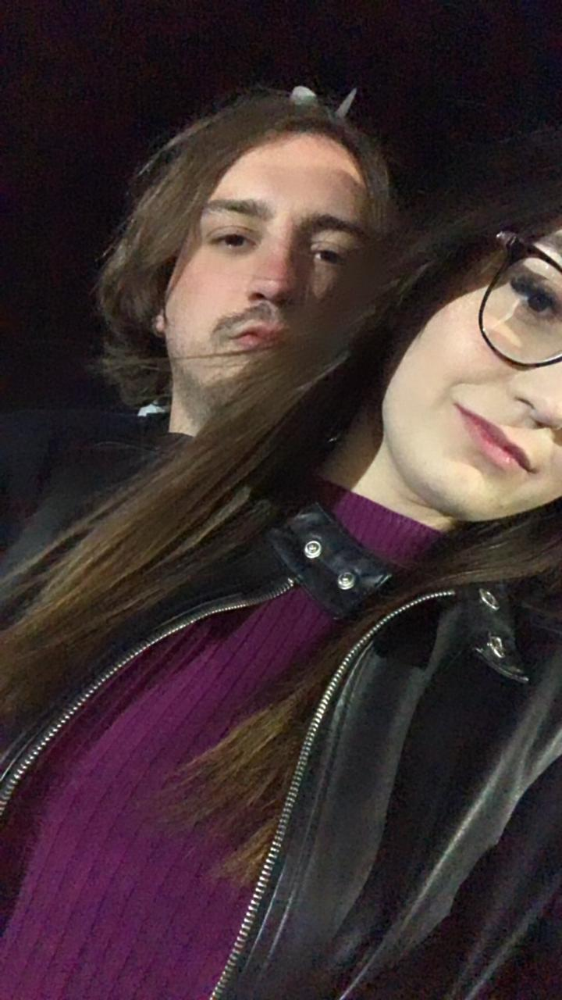

Hoje é um dia especial, pois estamos comemorando três meses juntos. Três meses de amor, companheirismo e momentos inesquecíveis que compartilhamos lado a lado. Nesse curto período de tempo, você já se tornou uma parte essencial da minha vida, preenchendo meus dias com alegria e felicidade.
Lembro-me do momento em que nos conhecemos, daquele instante mágico em que nossos olhares se cruzaram pela primeira vez. Desde então, o amor floresceu e cada dia ao seu lado tem sido um presente. A forma como você me completa, me inspira e me faz ser uma versão melhor de mim mesmo é algo que valorizo profundamente.
Durante esses três meses, construímos uma conexão especial e única. Nosso amor é como um lindo jardim, regado com carinho, compreensão e respeito mútuo. Cada risada compartilhada, cada abraço apertado e cada momento de cumplicidade fortalece o laço que nos une.
Você é alguém especial, uma pessoa com quem posso ser eu mesmo, sem medo ou hesitação. Sua presença ilumina meus dias e aquece meu coração. Nossas aventuras, conversas profundas e simples momentos de ternura são tesouros que guardo com carinho.
Quero expressar minha gratidão por ter você ao meu lado. Seu apoio incondicional, seu amor genuíno e seu sorriso encantador são verdadeiros presentes na minha vida. Mal posso esperar para ver o que o futuro nos reserva, pois tenho certeza de que ainda teremos muitas memórias incríveis para criar juntos.
Neste dia especial, renovo meu compromisso de cuidar de você, amá-la e estar presente em cada passo da nossa jornada. Estou emocionado por tudo o que já vivemos e animado com todas as possibilidades que o nosso amor nos reserva.
Feliz 3 meses de namoro, meu amor! Que este seja apenas o começo de uma história repleta de amor, crescimento e felicidade compartilhada. Te amo mais do que as palavras podem expressar.
TE AMO MUITO